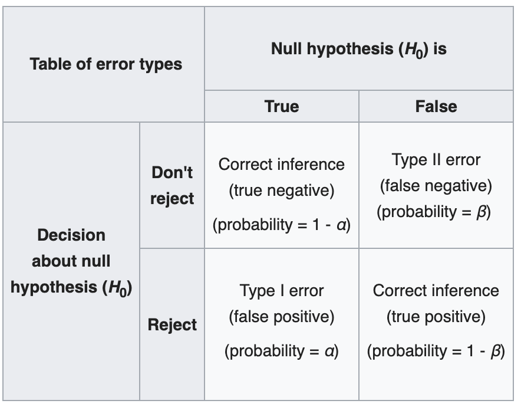

Multiple Hypothesis Testing
Hypothesis testing is a commonnly used method in statistics where we run tests to check whether
a null hypothesis \(H_0\) is true or should we accept the alternate hypothesis \(H_1\). In cases,
where there are multiple (\(m\)) null hypotheses, it is not possible to determine which of the \(m\)
hypotheses are acceptable using a single test.
Background
To give an idea of why multiple testing is important, let us revise some basic concepts to back up.
Let's start with the definition of Type I and Type II errors

(Source: wiki)
From the above table we conclude that Type I error, \(\alpha = \)Pr( rejecting a null hypothesis by mistake ).
This error becomes significant when performing multiple hypothesis testing.
\[\mathrm{Pr(Not\;making\;an\;error)} = 1-\alpha\]
\[\mathrm{Pr(Not\;making\;an\;error\;in\;m\;tests)} = (1-\alpha)^m\]
\[\mathrm{Pr(Atleast\;making\;1\;error\;in\;m\;tests)} = 1-(1-\alpha)^m\]
(Source: lecture notes)
From the above graph we can see that the probability of making at least one error reaches almost 1
for all higher values of \(m\). In this blog, we will discuss various techniques to tackle this
problem.
Terminology
Before discussing the formal techniques to tackle the issue of multiple hypothesis testing, we
need to get familiarized with various metrics known for this problem statement. All of these metrics
aim at controlling the Type I error rate of the overall statistical test. We use the given notations:
\(V = \) #{type 1 errors} [false positives], \(R = \) #{times null hypotheses are rejected},
\(m = \) #{hypotheses}
-
Per comparison error rate (PCER): It is an estimate of the rate of false positives
per hypothesis
\[\mathrm{PCER} = \frac{\mathbb{E}(V)}{m}\]
-
Per-family error rate (PFER): It is the expected number of type I errors (per family
denotes the family of null hypotheses under consideration)
\[\mathrm{PFER} = \mathbb{E}(V)\]
-
Family-wise error rate (FWER): It is the probability of making at least one Type I error.
This measure is useful in many of the techniques we will discuss later
\[\mathrm{FWER} = P(V \geq 1)\]
-
False Discovery Rate (FDR): It is the expected proportion of Type I errors among the
rejected hypotheses. The probability term is introduced compensate as the rest
of the expression becomes 1 when \(R = 0\).
\[\mathrm{FDR} = \mathbb{E}(\frac{V}{R} | R > 0) P(R > 0)\]
-
Positive false discovery rate (pFDR): The rate at which rejected discoveries are false
positives, given \(R\) is positive
\[\mathrm{pFDR} = \mathbb{E}(\frac{V}{R} | R > 0)\]
Multiple Testing
In this section, we will discuss the various techniques found in literature for controlling
Type I error rate. Before we start the process, we need to have a threshold error rate \(\alpha\)
which we want our overall experiment to meet. We can either have a prior standard which we want
our statistical test to meet or figure out one experimentally by permuting the labels of the
test.
FWER based methods
One of the popular ways to control the Type I error rate is by controlling the FWER metric
\(P(V \geq 1)\). There are two approaches to achieving this control
-
Single Step: Equal adjustments made to all \(p\)-values based on the threshold \(\alpha\)
-
Sequential: Adaptive adjustments made sequentially to each \(p\)-value
Bonferroni Correction
This method follows the single-step approach to adjusting the \(p\)-values of the null
hypotheses. Given a family of hypotheses \(\{H_1, \ldots, H_m\}\) and their corresponding
\(p\)-values \(\{p_1, \ldots, p_m\}\), let \(m_0\) be the number of true hypothesis.
Bonferroni Correction simply rejects any hypothesis \(H_i\) which meets the following criteria
\[p_i \leq \frac{\alpha}{m}\]
thereby, the overall FWER \(\leq \alpha\) in all situations. This technique doesn't
rely on any assumption on the dependence among the hypotheses.
Proof: Using
Boole's Inequality
\[\mathrm{FWER} = P\{\cup_{i=1}^{m_0}\left(p_i \leq \frac{\alpha}{m}\right)\}
\leq \sum_{i=1}^{m_0}P\left(p_i \leq \frac{\alpha}{m}\right)
= m_0 \frac{\alpha}{m}
\leq m \frac{\alpha}{m}
= \alpha\]
Holm-Bonferroni Correction
This method follows sequential update technique. This technique was introduced to overcome a few
shortcomings of the Bonferroni correction. The Bonferroni method is counter-intuitive as selection
of a particular hypothesis is dependent on the total number of hypotheses and it also leads to
high type 2 error rates as the chances of selecting a false hypothesis is high. Holm-Bonferroni Correction
consists of the following steps
- Order the unadjusted \(p\)-values such that \(p_1 \leq p_2 \leq \ldots \leq p_m\)
- Given a type I error rate \(\alpha\), let \(k\) be the minimal index such that
\[p_k \leq \frac{\alpha}{m - k + 1}\]
- Reject all null hypotheses \(H_1, \ldots, H_{k-1}\) and accept the hypotheses \(H_k, \ldots, H_{m}\)
- In case \(k = 1\), accept all null hypotheses
Proof: We have to show that even if we incorrectly reject a true hypothesis the probability of that
occurring is at most \(\alpha\). Proving the same by contradiction
Suppose we incorrectly reject a true hypothesis. Let us assume \(h\) is the first true hypothesis to
be rejected and we have \(m_0\) true hypotheses. Then we have
\[\begin{align*}h - 1 &\leq m - m_0
\\m_0 &\leq m -h + 1
\\\frac{1}{m - h + 1} &\leq \frac{1}{m_0}\end{align*}\]
\(p_h\) was rejected as \(p_h \leq \frac{\alpha}{m - h + 1}\), using the above equation we find that
the upper bound for \(p_h \leq \frac{\alpha}{m_0}\). Let \(I_0\) be the set of indices which represent
the true null hypothesis. We define another random variable
\[A = \{p_i \leq \frac{\alpha}{m_0},\; \forall i \in I_0\}\]
From Bonferroni's Inequality, we find that \(P(A) \leq \alpha\)
FDR based methods
In many cases, we can afford to have a few false positives and we wish to focus on the type II error
as well. In these scenarios, trying to restrict the FDR is a better option. FDR is designed to
control the proportion of false positives among a set of rejected samples \(R\).
\[\mathrm{FDR} = \frac{V}{R}\]
In this section, we will discuss one such method to control the FDR.
Benjamini and Hochberg
This method aims at controlling the FDR level \(\delta\) by using the following steps
- Order the unadjusted \(p\)-values such that \(p_1 \leq p_2 \leq \ldots \leq p_m\)
- Given a type I error rate \(\delta\), let \(k\) be the minimal index such that
\[p_j \leq \delta\frac{j}{m}\]
- Reject all null hypotheses \(H_1, \ldots, H_{j-1}\) and accept the hypotheses \(H_j, \ldots, H_{m}\)
There are other methods of control using pFDR which can also be used to control the error rates
in multiple hypothesis testing problem. The discussion of those are out of the scope of this blog.
References